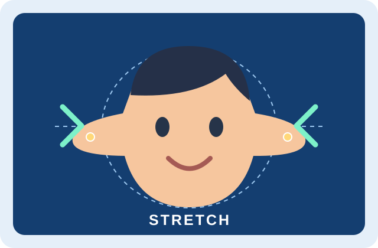

How the Project Works
Make a funny face by pinching and pulling near your head in the camera view. The app tracks your face and up to two hands, then changes the image around the place you grab.
Choose Stretch, Inflate, Shrink, or Twist. Work on your whole head or just your face, and compare your result with the original view.
Try the illustrated demo first to explore the effects using a mouse or touch.
Features of the Project
- Four effects with adjustable strength and effect area.
- Whole-head and face-only editing with a visible guide outline.
- Head coverage and left/right alignment controls to fit your hairstyle.
- Keep shape, Undo last, and Reset face for building and clearing effects.
- A Big head preset, original comparison, and clean PNG photo download.
How to Play
- Launch Stretch and choose Try a demo to practise by dragging the illustrated face.
- For your own face, click Start camera and allow camera access. Keep your entire head in view.
- Check the editable outline. Adjust Head coverage and Outline left/right until it fits.
- Choose an effect, then pinch near a feature and move your hand. Pull to stretch, or move sideways to twist.
- Turn on Keep shape to save each pull when you release it and add another effect.
- Use Undo last or Reset face to change your result. Click Save photo to download it.
Use even lighting and keep your hands and head visible. Camera mode works best in a current browser with WebGL enabled. You can return to the illustrated demo at any time.
What You Will Learn
Pretrained MediaPipe models estimate face and hand landmarks. The app uses those points to locate the head, recognize a pinch, and move nearby pixels to create a local image warp.
Explore how the effect area and strength change the result. The model estimates the editable outline from your facial landmarks, so head coverage and alignment help it fit the image.
Camera processing happens in your browser. Saving a photo downloads the result to your device.